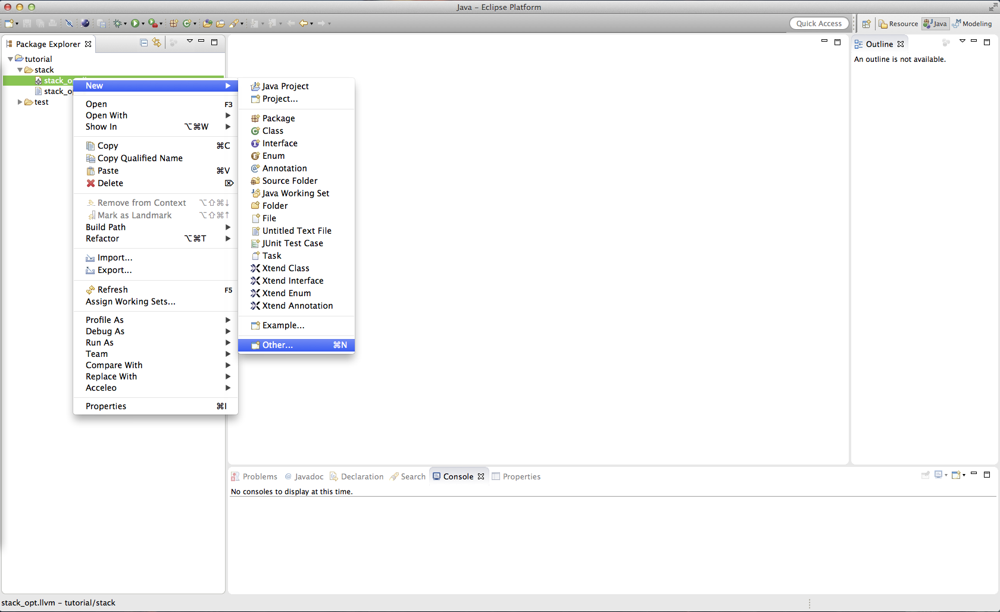
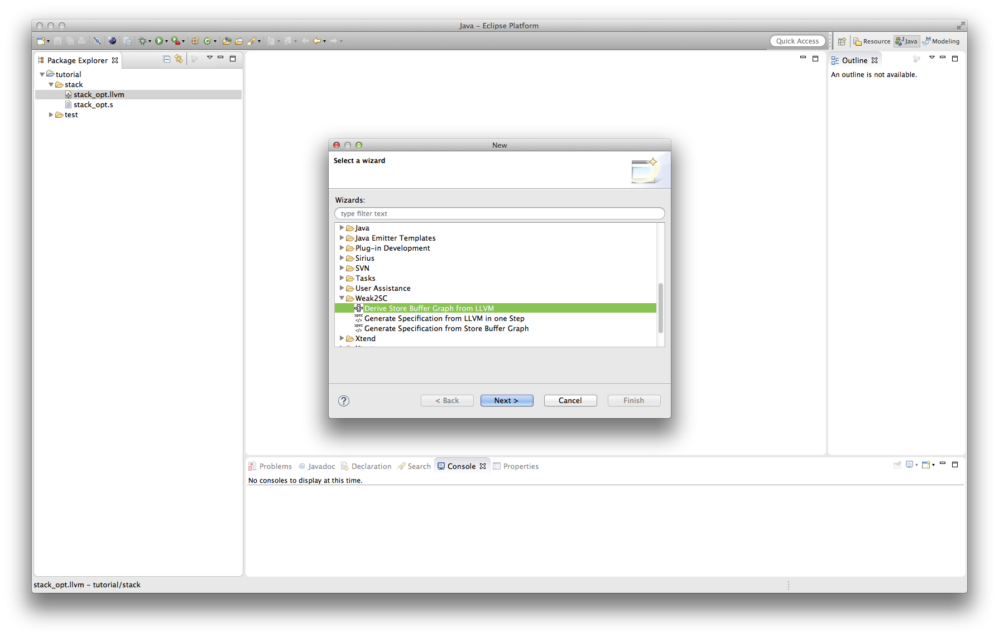
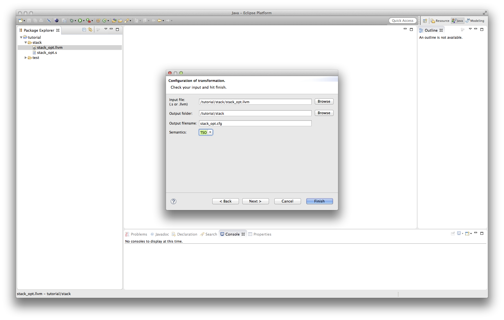
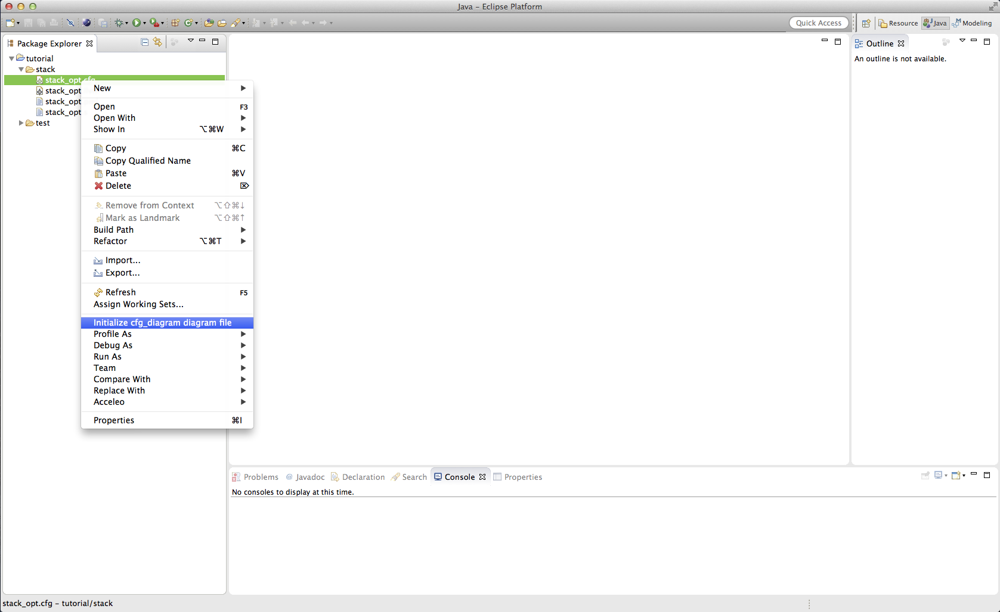
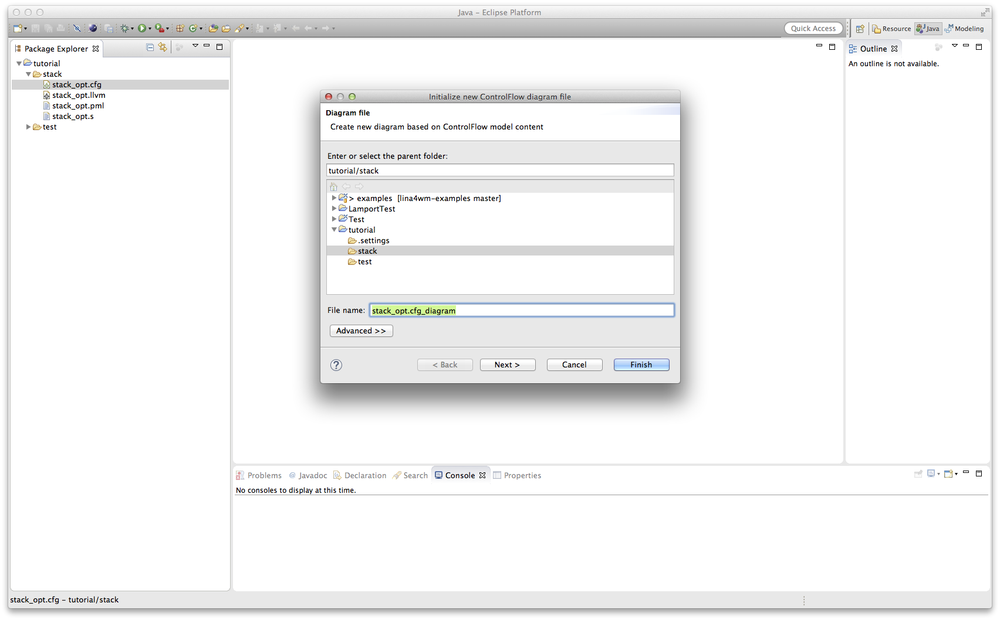
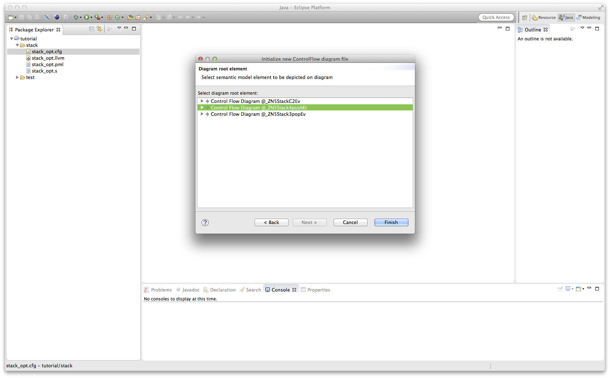
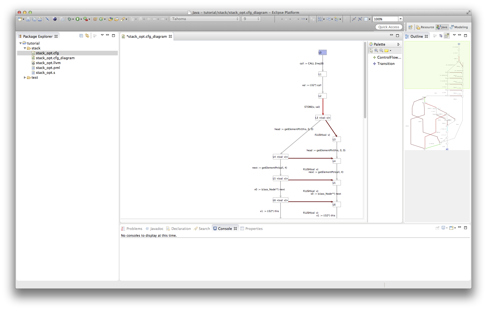

Generate Store Buffer Graphs
In the following we will show how to generate store buffer graphs from LLVM code and the according visualization.
How to: Generation
Take a look at the step by step guide to see how to generate a LLVM file for a C file. Once you have a '.s' file,
right click it and select "New -> Other".

Next choose the wizard category 'Weak2SC' and select 'Derive Store Buffer Graph from LLVM'.

On the first page of the wizard you will be able to configure the generation by providing an input file, output file, output folder and the memory models semantics.

The AST file will be checked automatically for errors, unsupported LLVM code and other problems. If no problems are found, you can press 'Finish' and will find a generated store buffer graph
file in the specified folder. If any error was found, you will not be able to click 'Finish', but you have to choose 'Next' and will find a list of the errors. In case only minor
problems are found, you will receive a warning and can see the full list in the same wizard page.
After clicking 'Finish' you will find you store buffer graph file with the extension '.cfg' in the output folder you chose.
How to: Visualization
Right-click your store buffer graph file ('.cfg') and select 'Initialize cfg_diagram diagram file'.

On the first page of the wizard you will be asked to select an output folder and name for your diagram file. Change these fields to you desire and press 'Next'.

On the next page you can select which element of the store buffer graph file should visualized. Please note that this wizard is generated and therefore it might be possible that
you will be able to see strange elements to be visualized. These ones can simply be ignored. Usually you will be interested in generation the visualization of the store
buffer graph for a specific function. To do so simply select the function and click on 'Finish'.

After that you can find the store buffer graph visualization file ('.cfg_diagram') in the output folder you chose. Opening it, you can find a visualization of the function
you chose:

States with buffers are marked with '< >', containing the current buffer entries as tuples.